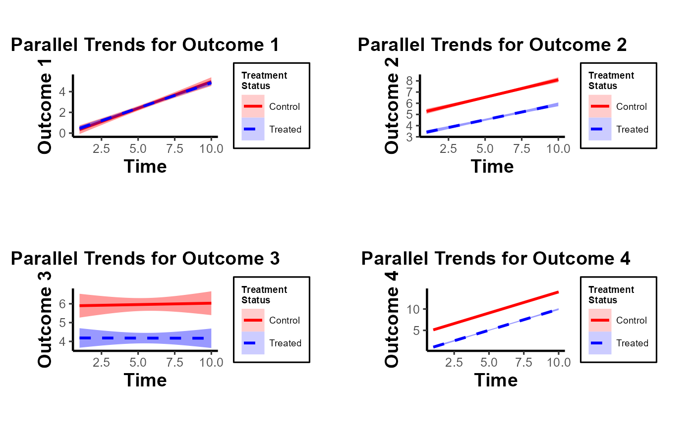
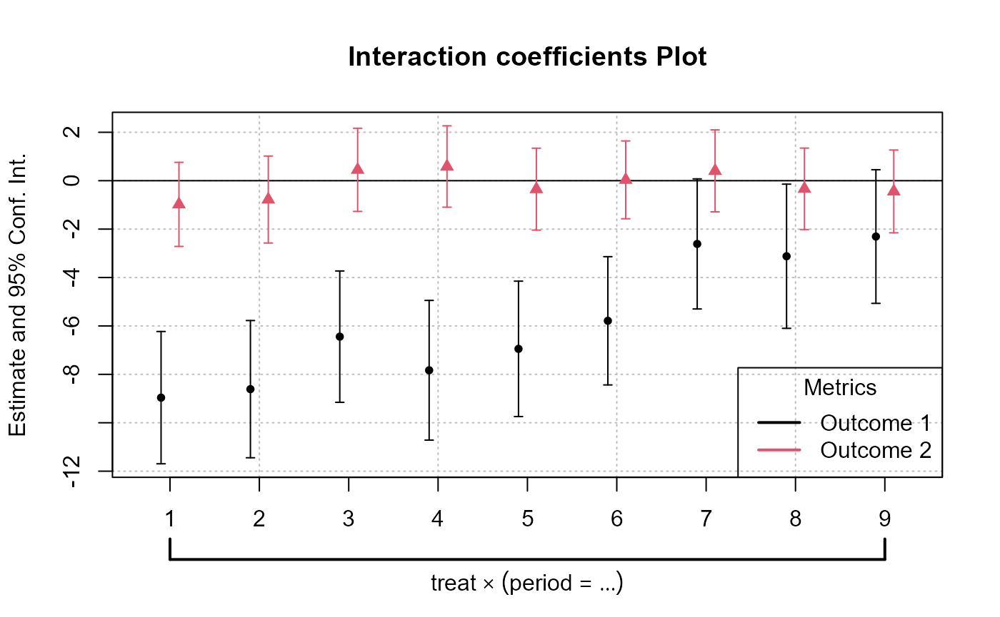
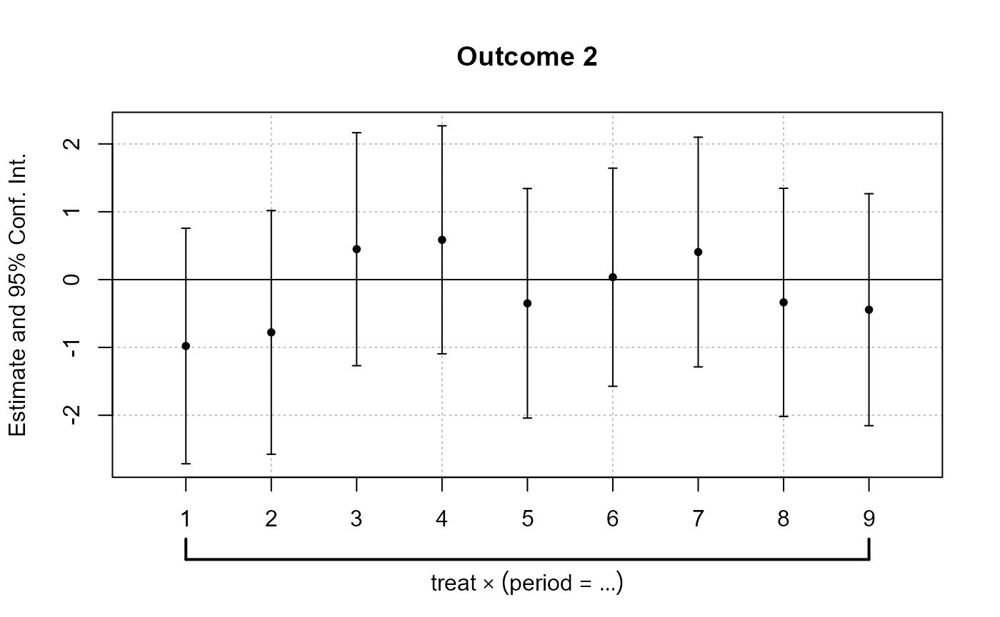
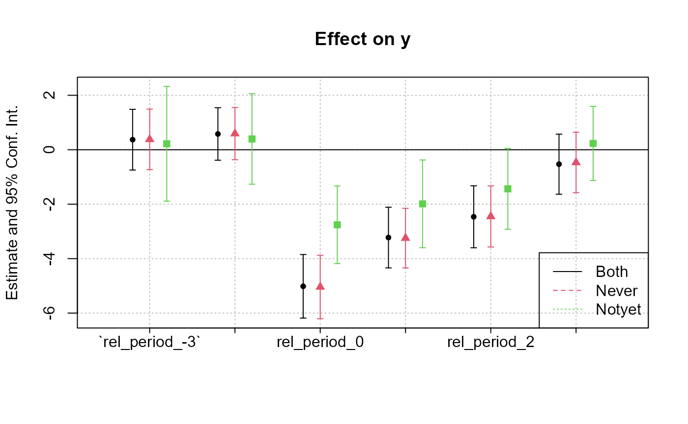

did.Rmd
library(causalverse)
library(tidyverse)
#> ── Attaching core tidyverse packages ──────────────────────── tidyverse 2.0.0 ──
#> ✔ dplyr 1.1.2 ✔ readr 2.1.4
#> ✔ forcats 1.0.0 ✔ stringr 1.5.1
#> ✔ ggplot2 3.4.4 ✔ tibble 3.2.1
#> ✔ lubridate 1.9.2 ✔ tidyr 1.3.0
#> ✔ purrr 1.0.2
#> ── Conflicts ────────────────────────────────────────── tidyverse_conflicts() ──
#> ✖ dplyr::filter() masks stats::filter()
#> ✖ dplyr::lag() masks stats::lag()
#> ℹ Use the conflicted package (<http://conflicted.r-lib.org/>) to force all conflicts to become errors
library(PanelMatch)
library(fixest)
DisplayTreatment(
unit.id = "id",
time.id = "year",
# legend.position = "none",
xlab = "Year",
ylab = "Unit",
# hide.x.tick.label = TRUE,
hide.y.tick.label = TRUE,
# dense.plot = TRUE,
treatment = "treat",
data = fixest::base_stagg |>
mutate(treat = if_else(time_to_treatment < 0, 0, 1))
)It’s okay to have some units without any observation on the left-hand side (i.e., left-censored).
The plot_par_trends function is designed to assist
researchers and analysts in visualizing parallel trends in longitudinal
datasets, particularly for datasets with treatment and control groups.
This tool makes it easy to visualize changes over time for various
outcome metrics between the groups.
Data Structure
For optimal use of plot_par_trends, ensure your data is
structured in the following manner:
entity: A unique identifier for each observation (e.g.,
individuals, companies).time: The time period for the observation.Sample Data Generation
For demonstration purposes, we can generate some illustrative data:
library(tidyverse)
data <- expand.grid(entity = 1:100, time = 1:10) %>%
dplyr::arrange(entity, time) %>%
dplyr::mutate(
treatment = ifelse(entity <= 50, "Treated", "Control"),
outcome1 = 0.5 * time + rnorm(n(), 0, 2) + ifelse(treatment == "Treated", 0, 0),
outcome2 = 3 + 0.3 * time + rnorm(n(), 0, 1) + ifelse(treatment == "Treated", 0, 2),
outcome3 = 3 + 0.5 * time * rnorm(n(), 0, 1) + rexp(n(), rate = 1) + ifelse(treatment == "Treated", 0, 2),
outcome4 = time + rnorm(n(), 0, 1) + ifelse(treatment == "Treated", 0, 2) * 2
)
head(data)
#> entity time treatment outcome1 outcome2 outcome3 outcome4
#> 1 1 1 Treated -4.6811537 3.805660 3.338545 -0.7753409
#> 2 1 2 Treated -0.8810304 3.292848 7.183620 2.4547248
#> 3 1 3 Treated 2.2930287 4.430837 3.327542 2.0859113
#> 4 1 4 Treated -0.3440152 5.163441 6.469421 4.1430309
#> 5 1 5 Treated 0.6635218 5.420341 1.702134 3.0329169
#> 6 1 6 Treated -0.2187910 5.427507 2.382530 7.0894805
summary(data)
#> entity time treatment outcome1
#> Min. : 1.00 Min. : 1.0 Length:1000 Min. :-6.901
#> 1st Qu.: 25.75 1st Qu.: 3.0 Class :character 1st Qu.: 1.028
#> Median : 50.50 Median : 5.5 Mode :character Median : 2.777
#> Mean : 50.50 Mean : 5.5 Mean : 2.757
#> 3rd Qu.: 75.25 3rd Qu.: 8.0 3rd Qu.: 4.425
#> Max. :100.00 Max. :10.0 Max. :10.134
#> outcome2 outcome3 outcome4
#> Min. : 1.207 Min. :-6.802 Min. :-1.678
#> 1st Qu.: 4.581 1st Qu.: 3.022 1st Qu.: 4.945
#> Median : 5.661 Median : 4.928 Median : 7.639
#> Mean : 5.671 Mean : 5.019 Mean : 7.559
#> 3rd Qu.: 6.798 3rd Qu.: 6.865 3rd Qu.:10.087
#> Max. :10.186 Max. :23.468 Max. :16.779Visualizing Trends with plot_par_trends Invoke the
plot_par_trends function using the sample data:
results <- plot_par_trends(
data = data,
metrics_and_names = list(
outcome1 = "Outcome 1",
outcome2 = "Outcome 2",
outcome3 = "Outcome 3",
outcome4 = "Outcome 4"
),
treatment_status_var = "treatment",
time_var = list(time = "Time"),
smoothing_method = "glm",
theme_use = causalverse::ama_theme(base_size = 12)
# title_prefix = "Para Trends"
)Note: This custom function is built based on the
geom_smooth function from ggplot2. Therefore, it supports
most of the smoothing methods you’d find in ggplot2, such as
lm, glm, loess, etc.
The function returns a list of ggplot objects, which can be
visualized using tools like gridExtra
library(gridExtra)
#>
#> Attaching package: 'gridExtra'
#> The following object is masked from 'package:dplyr':
#>
#> combine
gridExtra::grid.arrange(grobs = results, ncol = 2)
Note of Caution: When using this custom package, it’s crucial to carefully examine parallel trends plots both with and without control variables. At times, one might observe suitable parallel trends without control variables. However, when these control variables are introduced, the underlying assumptions can be disturbed. Conversely, there are cases where the general parallel trends assumption doesn’t seem to be in place, but when conditioned on the control variables, the trends align perfectly. This package provides functions that allow users to easily generate these plots side by side, especially after formulating the predicted values of dependent variables by accounting for control variables. Always approach these plots with a discerning eye to ensure accurate interpretation and application.
In this demonstration, I’ve incorporated the use of the smoothing function to illustrate its potential application. It’s imperative, however, to approach this function with prudence. Although the smoothing function can be invaluable in revealing underlying trends in specific scenarios, its application carries inherent risks. One such risk is the inadvertent or intentional misrepresentation of data, leading observers to falsely deduce the presence of parallel trends where they might not exist. This can potentially skew interpretations and lead to incorrect conclusions.
Given these concerns, if you’re inclined to utilize the smoothing function, it’s paramount to also consider the implications and insights from our secondary plot. This subsequent visualization offers a more granular and statistically sound perspective, specifically focusing on the pre-treatment disparities between the treated and control groups. It serves as a vital counterbalance, ensuring that any trend interpretations are grounded in robust statistical analysis.
Arguments
data: A data frame containing the data to be used in
the model.dependent_vars: A named list of dependent variables to
model along with their respective labels.time_var: The name of the time variable in the
data.Output
The function returns a plot or a list of plots visualizing interaction coefficients based on user specifications.
library(fixest)
data("base_did")
# Combined Plot
combined_plot <- plot_coef_par_trends(
data = base_did,
dependent_vars = c(y = "Outcome 1", x1 = "Outcome 2"),
time_var = "period",
unit_treatment_status = "treat",
unit_id_var = "id",
plot_type = "coefplot",
combined_plot = TRUE,
plot_args = list(main = "Interaction coefficients Plot"),
legend_title = "Metrics",
legend_position = "bottomright"
)
#> Notes from the estimations:
#> [x 2] The variable 'period::10:treat' has been removed because of collinearity (see $collin.var).
# Individual Plots
indi_plots <- plot_coef_par_trends(
data = base_did,
dependent_vars = c(y = "Outcome 1", x1 = "Outcome 2"),
time_var = "period",
unit_treatment_status = "treat",
unit_id_var = "id",
plot_type = "coefplot",
combined_plot = FALSE
)
#> The variable 'period::10:treat' has been removed because of collinearity (see $collin.var).
#> The variable 'period::10:treat' has been removed because of collinearity (see $collin.var).
In Difference-in-Differences analysis, ensuring randomness in treatment assignment is crucial. This randomization comes in two main levels: random time assignment and random unit assignment.
Definition: This pertains to when (in time) a treatment or intervention is introduced, not to which units it’s introduced.
Importance in Staggered DiD or Rollout Design: If certain periods are predisposed to receiving treatment (e.g., economic booms or downturns), then the estimated treatment effect can get confounded with these period-specific shocks. A truly random time assignment ensures that the treatment’s introduction isn’t systematically related to other time-specific factors.
Example: Suppose there’s a policy aimed at improving infrastructure. If this policy tends to get introduced during economic booms because that’s when governments have surplus funds, then it’s challenging to disentangle the effects of the booming economy from the effects of the infrastructure policy. A random time assignment would ensure the policy’s introduction isn’t tied to the state of the economy.
Definition: This pertains to which units (like individuals, firms, or regions) are chosen to receive the treatment.
Example: Using the same infrastructure policy, if it is always introduced in wealthier regions first, then the effects of regional affluence can get confounded with the policy effects. Random unit assignment ensures the policy isn’t systematically introduced to certain kinds of regions.
Providing Evidence of Random Treatment Assignments:
To validate the DiD design, evidence should be provided for both random time and random unit assignments:
Graphical Analysis: Plot the timing of treatment introduction across various periods. A discernible pattern (like always introducing a policy before election years) can raise concerns.
Narrative Evidence: Historical context might indicate that the timing of treatment introduction was exogenous. For example, if a policy’s rollout timing was determined by some external random event, that would support random time assignment.
Statistical Tests: Conduct tests to demonstrate that pre-treatment characteristics are balanced between the treated and control groups. Techniques like t-tests or regressions can be used for this.
Narrative Evidence: Institutional or historical data might show that the selection of specific units for treatment was random.
library(ggplot2)
library(gridExtra)
library(dplyr)
# Control number of units and time periods here
num_units <- 2000
num_periods <- 20
# Setting seed for reproducibility
set.seed(123)
# Generate data for given number of units over specified periods
data <- expand.grid(unit = 1:num_units,
time_period = 1:num_periods)
data$treatment_random <- 0
data$treatment_systematic <- 0
# Randomly assigning treatment times to units
random_treatment_times <- sample(1:num_periods, num_units, replace = TRUE)
for (i in 1:num_units) {
data$treatment_random[data$unit == i &
data$time_period == random_treatment_times[i]] <- 1
}
# Calculate peaks robustly
peak_periods <- round(c(0.25, 0.5, 0.75) * num_periods)
# Systematic treatment assignment with higher probability at peak periods
prob_values <- rep(1/num_periods, num_periods)
# Update the probability for peak periods;
# the rest will have a slightly reduced probability
higher_prob <- 0.10 # Arbitrary, adjust as necessary
prob_values[peak_periods] <- higher_prob
adjustment <-
(length(peak_periods) * higher_prob - length(peak_periods) / num_periods) / (num_periods - length(peak_periods))
prob_values[-peak_periods] <- 1/num_periods - adjustment
systematic_treatment_times <-
sample(1:num_periods, num_units, replace = TRUE, prob = prob_values)
for (i in 1:num_units) {
data$treatment_systematic[data$unit == i &
data$time_period == systematic_treatment_times[i]] <- 1
}
head(data |> arrange(unit))
#> unit time_period treatment_random treatment_systematic
#> 1 1 1 0 0
#> 2 1 2 0 0
#> 3 1 3 0 0
#> 4 1 4 0 0
#> 5 1 5 0 0
#> 6 1 6 0 0
# Plotting
plot_random <-
plot_treat_time(
data = data,
time_var = time_period,
unit_treat = treatment_random,
theme_use = causalverse::ama_theme(base_size = 12),
show_legend = TRUE
)
plot_systematic <-
plot_treat_time(
data = data,
time_var = time_period,
unit_treat = treatment_systematic,
theme_use = causalverse::ama_theme(base_size = 12),
show_legend = TRUE
)
gridExtra::grid.arrange(plot_random, plot_systematic, ncol = 2)Random Time Assignment Plot:
Systematic Time Assignment Plot:
Interpretation: The random plot shows arbitrary treatment assignments, while the systematic plot reveals consistent periods where more units receive treatment. This systematic behavior can introduce bias in causal studies.
For a Single Pre-treatment Characteristic:
# data <- data.frame(treatment = c(rep(0, 50), rep(1, 50)),
# # Dummy for treatment
# characteristic = rnorm(100) # Randomly generated characteristic
# )
set.seed(123)
data = mtcars |>
dplyr::select(mpg, cyl) |>
dplyr::rowwise() |>
dplyr::mutate(treatment = sample(c(0,1), 1, replace = T)) |>
dplyr::ungroup()
t.test(mpg ~ treatment, data = data)
#>
#> Welch Two Sample t-test
#>
#> data: mpg by treatment
#> t = 0.81508, df = 29.976, p-value = 0.4215
#> alternative hypothesis: true difference in means between group 0 and group 1 is not equal to 0
#> 95 percent confidence interval:
#> -2.575206 5.995841
#> sample estimates:
#> mean in group 0 mean in group 1
#> 20.83889 19.12857\[ Characteristic_i = \alpha + \beta \times Treatment_i + \epsilon_i \]
where \(Characteristic_i\) is the pre-treatment characteristic of unit \(i\) and \(Treatment_i\) is a dummy variable which equals 1 if \(unit_i\) is treated and 0 otherwise.
lm_result <- lm(mpg ~ treatment, data = data)
summary(lm_result)
#>
#> Call:
#> lm(formula = mpg ~ treatment, data = data)
#>
#> Residuals:
#> Min 1Q Median 3Q Max
#> -10.439 -4.529 -1.179 2.271 13.061
#>
#> Coefficients:
#> Estimate Std. Error t value Pr(>|t|)
#> (Intercept) 20.839 1.429 14.581 3.72e-15 ***
#> treatment -1.710 2.161 -0.792 0.435
#> ---
#> Signif. codes: 0 '***' 0.001 '**' 0.01 '*' 0.05 '.' 0.1 ' ' 1
#>
#> Residual standard error: 6.064 on 30 degrees of freedom
#> Multiple R-squared: 0.02046, Adjusted R-squared: -0.01219
#> F-statistic: 0.6265 on 1 and 30 DF, p-value: 0.4348Visualization
library(ggplot2)
library(rlang)
#>
#> Attaching package: 'rlang'
#> The following objects are masked from 'package:purrr':
#>
#> %@%, flatten, flatten_chr, flatten_dbl, flatten_int, flatten_lgl,
#> flatten_raw, invoke, splice
library(gridExtra)
# Density distribution for a single characteristic
ggplot(data, aes(x = mpg, fill = factor(treatment))) +
geom_density(alpha = 0.5) +
labs(fill = "Treatment") +
ggtitle("Density Distribution by Treatment Group") +
causalverse::ama_theme()
# Side-by-side density distributions for multiple characteristics
plot_list <- plot_density_by_treatment(
data = data,
var_map = list("mpg" = "Var 1",
"cyl" = "Var 2"),
treatment_var = c("treatment" = "Treatment Name\nin Legend"),
theme_use = causalverse::ama_theme(base_size = 10)
)
grid.arrange(grobs = plot_list, ncol = 2)Multivariate Regression
Run a regression of each pre-treatment characteristic on the treatment dummy. This allows for the simultaneous assessment of balance on multiple characteristics. You can include all characteristics in a single regression as dependent variables.
lm_multivariate <-
lm(cbind(mpg, cyl) ~ treatment, data = data)
summary(lm_multivariate)
#> Response mpg :
#>
#> Call:
#> lm(formula = mpg ~ treatment, data = data)
#>
#> Residuals:
#> Min 1Q Median 3Q Max
#> -10.439 -4.529 -1.179 2.271 13.061
#>
#> Coefficients:
#> Estimate Std. Error t value Pr(>|t|)
#> (Intercept) 20.839 1.429 14.581 3.72e-15 ***
#> treatment -1.710 2.161 -0.792 0.435
#> ---
#> Signif. codes: 0 '***' 0.001 '**' 0.01 '*' 0.05 '.' 0.1 ' ' 1
#>
#> Residual standard error: 6.064 on 30 degrees of freedom
#> Multiple R-squared: 0.02046, Adjusted R-squared: -0.01219
#> F-statistic: 0.6265 on 1 and 30 DF, p-value: 0.4348
#>
#>
#> Response cyl :
#>
#> Call:
#> lm(formula = cyl ~ treatment, data = data)
#>
#> Residuals:
#> Min 1Q Median 3Q Max
#> -2.2857 -2.1111 -0.1111 1.7579 1.8889
#>
#> Coefficients:
#> Estimate Std. Error t value Pr(>|t|)
#> (Intercept) 6.1111 0.4274 14.30 6.21e-15 ***
#> treatment 0.1746 0.6461 0.27 0.789
#> ---
#> Signif. codes: 0 '***' 0.001 '**' 0.01 '*' 0.05 '.' 0.1 ' ' 1
#>
#> Residual standard error: 1.813 on 30 degrees of freedom
#> Multiple R-squared: 0.002428, Adjusted R-squared: -0.03082
#> F-statistic: 0.07302 on 1 and 30 DF, p-value: 0.7888All of the coefficients in each regression are not significant. Hence, we don’t have any concerns.
To be more rigorous, we should estimate all regressions simultaneously using SUR if we suspect the error terms of the different regression equations are correlated.
# install.packages("systemfit")
library(systemfit)
equation1 <- mpg ~ treatment
equation2 <- cyl ~ treatment
system <-
list(characteristic = equation1, characteristic2 = equation2)
fit <- systemfit(system, data = data, method = "SUR")
summary(fit)
#>
#> systemfit results
#> method: SUR
#>
#> N DF SSR detRCov OLS-R2 McElroy-R2
#> system 64 60 1201.65 32.5288 0.019002 0.020257
#>
#> N DF SSR MSE RMSE R2 Adj R2
#> characteristic 32 30 1103.0113 36.76705 6.06358 0.020457 -0.012194
#> characteristic2 32 30 98.6349 3.28783 1.81324 0.002428 -0.030824
#>
#> The covariance matrix of the residuals used for estimation
#> characteristic characteristic2
#> characteristic 36.76704 -9.39974
#> characteristic2 -9.39974 3.28783
#>
#> The covariance matrix of the residuals
#> characteristic characteristic2
#> characteristic 36.76704 -9.39974
#> characteristic2 -9.39974 3.28783
#>
#> The correlations of the residuals
#> characteristic characteristic2
#> characteristic 1.000000 -0.854932
#> characteristic2 -0.854932 1.000000
#>
#>
#> SUR estimates for 'characteristic' (equation 1)
#> Model Formula: mpg ~ treatment
#>
#> Estimate Std. Error t value Pr(>|t|)
#> (Intercept) 20.83889 1.42920 14.58080 3.5527e-15 ***
#> treatment -1.71032 2.16075 -0.79154 0.43484
#> ---
#> Signif. codes: 0 '***' 0.001 '**' 0.01 '*' 0.05 '.' 0.1 ' ' 1
#>
#> Residual standard error: 6.063584 on 30 degrees of freedom
#> Number of observations: 32 Degrees of Freedom: 30
#> SSR: 1103.011349 MSE: 36.767045 Root MSE: 6.063584
#> Multiple R-Squared: 0.020457 Adjusted R-Squared: -0.012194
#>
#>
#> SUR estimates for 'characteristic2' (equation 2)
#> Model Formula: cyl ~ treatment
#>
#> Estimate Std. Error t value Pr(>|t|)
#> (Intercept) 6.111111 0.427384 14.29887 6.2172e-15 ***
#> treatment 0.174603 0.646144 0.27022 0.78884
#> ---
#> Signif. codes: 0 '***' 0.001 '**' 0.01 '*' 0.05 '.' 0.1 ' ' 1
#>
#> Residual standard error: 1.813238 on 30 degrees of freedom
#> Number of observations: 32 Degrees of Freedom: 30
#> SSR: 98.634921 MSE: 3.287831 Root MSE: 1.813238
#> Multiple R-Squared: 0.002428 Adjusted R-Squared: -0.030824
# or users could use the `balance_assessment` function to get both SUR and Hotelling
results <- balance_assessment(data, "treatment", "mpg", "cyl")
print(results$SUR)
#>
#> systemfit results
#> method: SUR
#>
#> N DF SSR detRCov OLS-R2 McElroy-R2
#> system 64 60 1201.65 32.5288 0.019002 0.020257
#>
#> N DF SSR MSE RMSE R2 Adj R2
#> mpgeq 32 30 1103.0113 36.76705 6.06358 0.020457 -0.012194
#> cyleq 32 30 98.6349 3.28783 1.81324 0.002428 -0.030824
#>
#> The covariance matrix of the residuals used for estimation
#> mpgeq cyleq
#> mpgeq 36.76704 -9.39974
#> cyleq -9.39974 3.28783
#>
#> The covariance matrix of the residuals
#> mpgeq cyleq
#> mpgeq 36.76704 -9.39974
#> cyleq -9.39974 3.28783
#>
#> The correlations of the residuals
#> mpgeq cyleq
#> mpgeq 1.000000 -0.854932
#> cyleq -0.854932 1.000000
#>
#>
#> SUR estimates for 'mpgeq' (equation 1)
#> Model Formula: mpg ~ treatment
#> <environment: 0x00000152e2dc7c38>
#>
#> Estimate Std. Error t value Pr(>|t|)
#> (Intercept) 20.83889 1.42920 14.58080 3.5527e-15 ***
#> treatment -1.71032 2.16075 -0.79154 0.43484
#> ---
#> Signif. codes: 0 '***' 0.001 '**' 0.01 '*' 0.05 '.' 0.1 ' ' 1
#>
#> Residual standard error: 6.063584 on 30 degrees of freedom
#> Number of observations: 32 Degrees of Freedom: 30
#> SSR: 1103.011349 MSE: 36.767045 Root MSE: 6.063584
#> Multiple R-Squared: 0.020457 Adjusted R-Squared: -0.012194
#>
#>
#> SUR estimates for 'cyleq' (equation 2)
#> Model Formula: cyl ~ treatment
#> <environment: 0x00000152e2dcd798>
#>
#> Estimate Std. Error t value Pr(>|t|)
#> (Intercept) 6.111111 0.427384 14.29887 6.2172e-15 ***
#> treatment 0.174603 0.646144 0.27022 0.78884
#> ---
#> Signif. codes: 0 '***' 0.001 '**' 0.01 '*' 0.05 '.' 0.1 ' ' 1
#>
#> Residual standard error: 1.813238 on 30 degrees of freedom
#> Number of observations: 32 Degrees of Freedom: 30
#> SSR: 98.634921 MSE: 3.287831 Root MSE: 1.813238
#> Multiple R-Squared: 0.002428 Adjusted R-Squared: -0.030824For mpg and cyl: The treatment effect is
not statistically significant, implying no evidence against random unit
assignment based on this characteristic.
Hotelling’s T-squared test
This is the multivariate counterpart of the T-test designed to test the mean vector of two groups. It’s useful when you have multiple pre-treatment characteristics and you want to test if their mean vectors differ between the treated and control groups.
# For Hotelling's T^2, you can use the `Hotelling` package.
# install.packages("Hotelling")
library(Hotelling)
#> Loading required package: corpcor
#>
#> Attaching package: 'Hotelling'
#> The following object is masked from 'package:dplyr':
#>
#> summarise
treated_data <-
data[data$treatment == 1, c("mpg", "cyl" )]
control_data <-
data[data$treatment == 0, c("mpg", "cyl" )]
hotelling_test_res <- hotelling.test(treated_data, control_data)
hotelling_test_res
#> Test stat: 1.2406
#> Numerator df: 2
#> Denominator df: 29
#> P-value: 0.5557
# or users could use the `balance_assessment` function to get both SUR and Hotelling
results <- balance_assessment(data, "treatment", "mpg", "cyl")
print(results$Hotelling)
#> Test stat: 1.2406
#> Numerator df: 2
#> Denominator df: 29
#> P-value: 0.5557Matching
This is a more advanced technique, for example, modeling the probability of being treated based on pre-treatment characteristics using a logistic regression. After matching, you can test for balance in the pre-treatment characteristics between the treated and control groups.
# For propensity score matching, use the `MatchIt` package.
# install.packages("MatchIt")
library(MatchIt)
m.out <-
matchit(treatment ~ mpg + cyl,
data = data,
method = "nearest")
matched_data <- match.data(m.out)
# After matching, you can test for balance using t-tests or regressions.
t.test(mpg ~ treatment, data = matched_data)
#>
#> Welch Two Sample t-test
#>
#> data: mpg by treatment
#> t = -0.035239, df = 25.957, p-value = 0.9722
#> alternative hypothesis: true difference in means between group 0 and group 1 is not equal to 0
#> 95 percent confidence interval:
#> -4.238310 4.095453
#> sample estimates:
#> mean in group 0 mean in group 1
#> 19.05714 19.12857In conclusion, while visualizations provide an intuitive understanding, statistical tests provide a more rigorous method for assessing balance.
Since the PanelMatch package is no longer being updated
or developed, and its balance_scatter function does not
return a ggplot object, I have modified the code to return
a ggplot object in a more flexible manner.
library(PanelMatch)
# Maha 4-year lag, up to 5 matches
PM.results.maha.4lag.5m <- PanelMatch::PanelMatch(
lag = 4,
time.id = "year",
unit.id = "wbcode2",
treatment = "dem",
refinement.method = "mahalanobis",
data = PanelMatch::dem,
match.missing = TRUE,
covs.formula = ~ I(lag(tradewb, 1:4)) + I(lag(y, 1:4)),
size.match = 5,
qoi = "att",
outcome.var = "y",
lead = 0:4,
forbid.treatment.reversal = FALSE,
use.diagonal.variance.matrix = TRUE
)
# Maha 4-year lag, up to 10 matches
PM.results.maha.4lag.10m <- PanelMatch::PanelMatch(
lag = 4,
time.id = "year",
unit.id = "wbcode2",
treatment = "dem",
refinement.method = "mahalanobis",
data = PanelMatch::dem,
match.missing = TRUE,
covs.formula = ~ I(lag(tradewb, 1:4)) + I(lag(y, 1:4)),
size.match = 10,
qoi = "att",
outcome.var = "y",
lead = 0:4,
forbid.treatment.reversal = FALSE,
use.diagonal.variance.matrix = TRUE
)
# Using the function
balance_scatter_custom(
matched_set_list = list(PM.results.maha.4lag.5m$att, PM.results.maha.4lag.10m$att),
set.names = c("Maha 4 Lag 5 Matches", "Maha 4 Lag 10 Matches"),
data = dem,
dot.size = 5,
covariates = c("y", "tradewb")
)When conducting research using matching methods for causal inference with time-series cross-sectional data (as with the PanelMatch package), it’s essential to evaluate the robustness of different matching or weighting methods. This assessment allows researchers to gauge the improvement in covariate balance resulting from the refinement of the matched set. Testing the robustness ensures that the findings are not an artifact of a specific matching method but are consistent across different approaches. In essence, a robust result gives more confidence in the causal relationships identified. Below is a quick guide on how to proceed:
library(PanelMatch)
runPanelMatch <- function(method, lag, size.match=NULL, qoi = "att") {
# Default parameters for PanelMatch
common.args <- list(
lag = lag,
time.id = "year",
unit.id = "wbcode2",
treatment = "dem",
data = dem,
covs.formula = ~ I(lag(tradewb, 1:4)) + I(lag(y, 1:4)),
qoi = qoi,
outcome.var = "y",
lead = 0:4,
forbid.treatment.reversal = FALSE,
size.match = size.match # setting size.match here for all methods
)
if(method == "mahalanobis") {
common.args$refinement.method <- "mahalanobis"
common.args$match.missing <- TRUE
common.args$use.diagonal.variance.matrix <- TRUE
} else if(method == "ps.match") {
common.args$refinement.method <- "ps.match"
common.args$match.missing <- FALSE
common.args$listwise.delete <- TRUE
} else if(method == "ps.weight") {
common.args$refinement.method <- "ps.weight"
common.args$match.missing <- FALSE
common.args$listwise.delete <- TRUE
}
return(do.call(PanelMatch, common.args))
}
methods <- c("mahalanobis", "ps.match", "ps.weight")
lags <- c(1, 4)
sizes <- c(5, 10)Run sequentially
res_pm <- list()
for(method in methods) {
for(lag in lags) {
for(size in sizes) {
name <- paste0(method, ".", lag, "lag.", size, "m")
res_pm[[name]] <- runPanelMatch(method, lag, size)
}
}
}
# for treatment reversal
res_pm_rev <- list()
for(method in methods) {
for(lag in lags) {
for(size in sizes) {
name <- paste0(method, ".", lag, "lag.", size, "m")
res_pm_rev[[name]] <- runPanelMatch(method, lag, size, qoi = "art")
}
}
}Run parallel
library(foreach)
library(doParallel)
registerDoParallel(cores = 4)
# Initialize an empty list to store results
res_pm <- list()
# Replace nested for-loops with foreach
results <-
foreach(
method = methods,
.combine = 'c',
.multicombine = TRUE,
.packages = c("PanelMatch", "causalverse")
) %dopar% {
tmp <- list()
for (lag in lags) {
for (size in sizes) {
name <- paste0(method, ".", lag, "lag.", size, "m")
tmp[[name]] <- runPanelMatch(method, lag, size)
}
}
tmp
}
# Collate results
for (name in names(results)) {
res_pm[[name]] <- results[[name]]
}
# Treatment reversal
# Initialize an empty list to store results
res_pm_rev <- list()
# Replace nested for-loops with foreach
results_rev <-
foreach(
method = methods,
.combine = 'c',
.multicombine = TRUE,
.packages = c("PanelMatch", "causalverse")
) %dopar% {
tmp <- list()
for (lag in lags) {
for (size in sizes) {
name <- paste0(method, ".", lag, "lag.", size, "m")
tmp[[name]] <-
runPanelMatch(method, lag, size, qoi = "art")
}
}
tmp
}
# Collate results
for (name in names(results_rev)) {
res_pm_rev[[name]] <- results_rev[[name]]
}
stopImplicitCluster()
# Now, you can access res_pm using res_pm[["mahalanobis.1lag.5m"]] etc.
library(gridExtra)
# Updated plotting function
create_balance_plot <- function(method, lag, sizes, res_pm, data) {
matched_set_lists <- lapply(sizes, function(size) {
res_pm[[paste0(method, ".", lag, "lag.", size, "m")]]$att
})
return(balance_scatter_custom(
matched_set_list = matched_set_lists,
legend.title = "Possible Matches",
set.names = as.character(sizes),
legend.position = c(0.2,0.8),
# for compiled plot, you don't need x,y, or main labs
x.axis.label = "",
y.axis.label = "",
main = "",
data = data,
dot.size = 5,
# show.legend = F,
them_use = causalverse::ama_theme(
base_size = 32,
legend_title_size = 12,
legend_text_size = 12
),
covariates = c("y", "tradewb")
))
}
plots <- list()
for (method in methods) {
for (lag in lags) {
plots[[paste0(method, ".", lag, "lag")]] <-
create_balance_plot(method, lag, sizes, res_pm, dem)
}
}
# # Arranging plots in a 3x2 grid
# grid.arrange(plots[["mahalanobis.1lag"]],
# plots[["mahalanobis.4lag"]],
# plots[["ps.match.1lag"]],
# plots[["ps.match.4lag"]],
# plots[["ps.weight.1lag"]],
# plots[["ps.weight.4lag"]],
# ncol=2, nrow=3)
# Standardized Mean Difference of Covariates
library(gridExtra)
library(grid)
# Create column and row labels using textGrob
col_labels <- c("1-year Lag", "4-year Lag")
row_labels <- c("Maha Matching", "PS Matching", "PS Weigthing")
major.axes.fontsize = 20
minor.axes.fontsize = 16To export
png(
file.path(getwd(), "export", "balance_scatter.png"),
width = 1200,
height = 1000
)
# Create a list-of-lists, where each inner list represents a row
grid_list <- list(
list(
nullGrob(),
textGrob(col_labels[1], gp = gpar(fontsize = minor.axes.fontsize)),
textGrob(col_labels[2], gp = gpar(fontsize = minor.axes.fontsize))
),
list(textGrob(
row_labels[1],
gp = gpar(fontsize = minor.axes.fontsize),
rot = 90
), plots[["mahalanobis.1lag"]], plots[["mahalanobis.4lag"]]),
list(textGrob(
row_labels[2],
gp = gpar(fontsize = minor.axes.fontsize),
rot = 90
), plots[["ps.match.1lag"]], plots[["ps.match.4lag"]]),
list(textGrob(
row_labels[3],
gp = gpar(fontsize = minor.axes.fontsize),
rot = 90
), plots[["ps.weight.1lag"]], plots[["ps.weight.4lag"]])
)
# "Flatten" the list-of-lists into a single list of grobs
grobs <- do.call(c, grid_list)
grid.arrange(
grobs = grobs,
ncol = 3,
nrow = 4,
widths = c(0.15, 0.42, 0.42),
heights = c(0.15, 0.28, 0.28, 0.28)
)
grid.text(
"Before Refinement",
x = 0.5,
y = 0.03,
gp = gpar(fontsize = major.axes.fontsize)
)
grid.text(
"After Refinement",
x = 0.03,
y = 0.5,
rot = 90,
gp = gpar(fontsize = major.axes.fontsize)
)
dev.off()
library(knitr)
include_graphics(file.path(getwd(), "export", "balance_scatter.png"))I do not include it in this vignette due to display issues, but the code can be easily replicated.
In the original PanelMatch package, the function
get_covariate_balance does not return a ggplot
object. Therefore, it is necessary to construct our own visualization.
However, one can utilize the output dataset from
get_covariate_balance for this purpose.
PM.results.ps.weight <-
PanelMatch(
lag = 4,
time.id = "year",
unit.id = "wbcode2",
treatment = "dem",
refinement.method = "ps.weight",
data = dem,
match.missing = FALSE,
listwise.delete = TRUE,
covs.formula = ~ I(lag(tradewb, 1:4)) + I(lag(y, 1:4)),
size.match = 5,
qoi = "att",
outcome.var = "y",
lead = 0:4,
forbid.treatment.reversal = FALSE
)
df <- get_covariate_balance(
PM.results.ps.weight$att,
data = dem,
covariates = c("tradewb", "y")
)
plot_covariate_balance_pretrend(df)We must also examine multiple matching and refining methods to ensure that we have robust evidence for covariate balance over the pre-treatment time period.
# Step 1: Define configurations
configurations <- list(
list(refinement.method = "none", qoi = "att"),
list(refinement.method = "none", qoi = "art"),
list(refinement.method = "mahalanobis", qoi = "att"),
list(refinement.method = "mahalanobis", qoi = "art"),
list(refinement.method = "ps.match", qoi = "att"),
list(refinement.method = "ps.match", qoi = "art"),
list(refinement.method = "ps.weight", qoi = "att"),
list(refinement.method = "ps.weight", qoi = "art")
)
# Step 2: Use lapply or loop to generate results
results <- lapply(configurations, function(config) {
PanelMatch(
lag = 4,
time.id = "year",
unit.id = "wbcode2",
treatment = "dem",
data = dem,
match.missing = FALSE,
listwise.delete = TRUE,
size.match = 5,
outcome.var = "y",
lead = 0:4,
forbid.treatment.reversal = FALSE,
refinement.method = config$refinement.method,
covs.formula = ~ I(lag(tradewb, 1:4)) + I(lag(y, 1:4)),
qoi = config$qoi
)
})
# Step 3: Get covariate balance and plot
plots <- mapply(function(result, config) {
df <- get_covariate_balance(
if(config$qoi == "att") result$att else result$art,
data = dem,
covariates = c("tradewb", "y"),
plot = F
)
causalverse::plot_covariate_balance_pretrend(df, main = "")
}, results, configurations, SIMPLIFY = FALSE)
# Set names for plots
names(plots) <- sapply(configurations, function(config) {
paste(config$qoi, config$refinement.method, sep = ".")
})
# To view plots
# lapply(plots, print)
# grid.arrange(
# plots$att.none,
# plots$att.mahalanobis,
# plots$att.ps.match,
# plots$att.ps.weight,
# plots$art.none,
# plots$art.mahalanobis,
# plots$art.ps.match,
# plots$art.ps.weight,
# ncol = 4,
# nrow = 2
# )
# Equivalently
# grid.arrange(grobs = c(plots[paste0("att.", c("none", "mahalanobis", "ps.match", "ps.weight"))], plots[paste0("art.", c("none", "mahalanobis", "ps.match", "ps.weight"))]), ncol = 4)For a fancier plot
library(gridExtra)
library(grid)
# Column and row labels
col_labels <-
c("None",
"Mahalanobis",
"Propensity Score Matching",
"Propensity Score Weighting")
row_labels <- c("ATT", "ART")
# Specify your desired fontsize for labels
minor.axes.fontsize <- 16
major.axes.fontsize <- 20
png(
file.path(getwd(), "export", "var_balance_pretreat.png"),
width = 1200,
height = 1000
)
# Create a list-of-lists, where each inner list represents a row
grid_list <- list(
list(
nullGrob(),
textGrob(col_labels[1], gp = gpar(fontsize = minor.axes.fontsize)),
textGrob(col_labels[2], gp = gpar(fontsize = minor.axes.fontsize)),
textGrob(col_labels[3], gp = gpar(fontsize = minor.axes.fontsize)),
textGrob(col_labels[4], gp = gpar(fontsize = minor.axes.fontsize))
),
list(
textGrob(row_labels[1], gp = gpar(fontsize = minor.axes.fontsize), rot = 90),
plots$att.none,
plots$att.mahalanobis,
plots$att.ps.match,
plots$att.ps.weight
),
list(
textGrob(row_labels[2], gp = gpar(fontsize = minor.axes.fontsize), rot = 90),
plots$art.none,
plots$art.mahalanobis,
plots$art.ps.match,
plots$art.ps.weight
)
)
# "Flatten" the list-of-lists into a single list of grobs
grobs <- do.call(c, grid_list)
# Arrange your plots with text labels
grid.arrange(
grobs = grobs,
ncol = 5,
nrow = 3,
widths = c(0.1, 0.225, 0.225, 0.225, 0.225),
heights = c(0.1, 0.45, 0.45)
)
# Add main x and y axis titles
grid.text(
"Refinement Methods",
x = 0.5,
y = 0.01,
gp = gpar(fontsize = major.axes.fontsize)
)
grid.text(
"Quantities of Interest",
x = 0.02,
y = 0.5,
rot = 90,
gp = gpar(fontsize = major.axes.fontsize)
)
dev.off()
# sequential
# Step 1: Apply PanelEstimate function
# Initialize an empty list to store results
res_est <- vector("list", length(res_pm))
# Iterate over each element in res_pm
for (i in 1:length(res_pm)) {
res_est[[i]] <- PanelEstimate(
res_pm[[i]],
data = dem,
se.method = "bootstrap",
number.iterations = 1000,
confidence.level = .95
)
# Transfer the name of the current element to the res_est list
names(res_est)[i] <- names(res_pm)[i]
}
# Step 2: Apply plot_PanelEstimate function
# Initialize an empty list to store plot results
res_est_plot <- vector("list", length(res_est))
# Iterate over each element in res_est
for (i in 1:length(res_est)) {
res_est_plot[[i]] <-
plot_PanelEstimate(res_est[[i]],
main = "",
theme_use = causalverse::ama_theme(base_size = 14))
# Transfer the name of the current element to the res_est_plot list
names(res_est_plot)[i] <- names(res_est)[i]
}
# check results
# res_est_plot$mahalanobis.1lag.5m
# Step 1: Apply PanelEstimate function for res_pm_rev
# Initialize an empty list to store results
res_est_rev <- vector("list", length(res_pm_rev))
# Iterate over each element in res_pm_rev
for (i in 1:length(res_pm_rev)) {
res_est_rev[[i]] <- PanelEstimate(
res_pm_rev[[i]],
data = dem,
se.method = "bootstrap",
number.iterations = 1000,
confidence.level = .95
)
# Transfer the name of the current element to the res_est_rev list
names(res_est_rev)[i] <- names(res_pm_rev)[i]
}
# Step 2: Apply plot_PanelEstimate function for res_est_rev
# Initialize an empty list to store plot results
res_est_plot_rev <- vector("list", length(res_est_rev))
# Iterate over each element in res_est_rev
for (i in 1:length(res_est_rev)) {
res_est_plot_rev[[i]] <-
plot_PanelEstimate(res_est_rev[[i]],
main = "",
theme_use = causalverse::ama_theme(base_size = 14))
# Transfer the name of the current element to the res_est_plot_rev list
names(res_est_plot_rev)[i] <- names(res_est_rev)[i]
}
# parallel
library(doParallel)
library(foreach)
# Detect the number of cores to use for parallel processing
num_cores <- 4
# Register the parallel backend
cl <- makeCluster(num_cores)
registerDoParallel(cl)
# Step 1: Apply PanelEstimate function in parallel
res_est <-
foreach(i = 1:length(res_pm), .packages = "PanelMatch") %dopar% {
PanelEstimate(
res_pm[[i]],
data = dem,
se.method = "bootstrap",
number.iterations = 1000,
confidence.level = .95
)
}
# Transfer names from res_pm to res_est
names(res_est) <- names(res_pm)
# Step 2: Apply plot_PanelEstimate function in parallel
res_est_plot <-
foreach(
i = 1:length(res_est),
.packages = c("PanelMatch", "causalverse", "ggplot2")
) %dopar% {
plot_PanelEstimate(res_est[[i]],
main = "",
theme_use = causalverse::ama_theme(base_size = 10))
}
# Transfer names from res_est to res_est_plot
names(res_est_plot) <- names(res_est)
# Step 1: Apply PanelEstimate function for res_pm_rev in parallel
res_est_rev <-
foreach(i = 1:length(res_pm_rev), .packages = "PanelMatch") %dopar% {
PanelEstimate(
res_pm_rev[[i]],
data = dem,
se.method = "bootstrap",
number.iterations = 1000,
confidence.level = .95
)
}
# Transfer names from res_pm_rev to res_est_rev
names(res_est_rev) <- names(res_pm_rev)
# Step 2: Apply plot_PanelEstimate function for res_est_rev in parallel
res_est_plot_rev <-
foreach(
i = 1:length(res_est_rev),
.packages = c("PanelMatch", "causalverse", "ggplot2")
) %dopar% {
plot_PanelEstimate(res_est_rev[[i]],
main = "",
theme_use = causalverse::ama_theme(base_size = 10))
}
# Transfer names from res_est_rev to res_est_plot_rev
names(res_est_plot_rev) <- names(res_est_rev)
# Stop the cluster
stopCluster(cl)
library(gridExtra)
library(grid)
# Column and row labels
col_labels <- c("Mahalanobis 5m",
"Mahalanobis 10m",
"PS Matching 5m",
"PS Matching 10m",
"PS Weighting 5m")
row_labels <- c("ATT", "ART")
# Specify your desired fontsize for labels
minor.axes.fontsize <- 16
major.axes.fontsize <- 20
# Create a list-of-lists, where each inner list represents a row
grid_list <- list(
list(
nullGrob(),
textGrob(col_labels[1], gp = gpar(fontsize = minor.axes.fontsize)),
textGrob(col_labels[2], gp = gpar(fontsize = minor.axes.fontsize)),
textGrob(col_labels[3], gp = gpar(fontsize = minor.axes.fontsize)),
textGrob(col_labels[4], gp = gpar(fontsize = minor.axes.fontsize)),
textGrob(col_labels[5], gp = gpar(fontsize = minor.axes.fontsize))
),
list(
textGrob(row_labels[1], gp = gpar(fontsize = minor.axes.fontsize), rot = 90),
res_est_plot$mahalanobis.1lag.5m,
res_est_plot$mahalanobis.1lag.10m,
res_est_plot$ps.match.1lag.5m,
res_est_plot$ps.match.1lag.10m,
res_est_plot$ps.weight.1lag.5m
),
list(
textGrob(row_labels[2], gp = gpar(fontsize = minor.axes.fontsize), rot = 90),
res_est_plot_rev$mahalanobis.1lag.5m,
res_est_plot_rev$mahalanobis.1lag.10m,
res_est_plot_rev$ps.match.1lag.5m,
res_est_plot_rev$ps.match.1lag.10m,
res_est_plot_rev$ps.weight.1lag.5m
)
)
# "Flatten" the list-of-lists into a single list of grobs
grobs <- do.call(c, grid_list)
# Arrange your plots with text labels
grid.arrange(
grobs = grobs,
ncol = 6,
nrow = 3,
widths = c(0.1, 0.18, 0.18, 0.18, 0.18, 0.18),
heights = c(0.1, 0.45, 0.45)
)
# Add main x and y axis titles
grid.text(
"Methods",
x = 0.5,
y = 0.02,
gp = gpar(fontsize = major.axes.fontsize)
)
grid.text(
"",
x = 0.02,
y = 0.5,
rot = 90,
gp = gpar(fontsize = major.axes.fontsize)
)Staggered DiD (Difference-in-Differences) designs are becoming increasingly common in empirical research. These designs arise when different units (like firms, regions, or countries) receive treatments at different time periods. This presents a unique challenge, as standard DiD methods often do not apply seamlessly to such setups.
For data analyses involving staggered DiD designs, it’s pivotal to
properly align treatment and control groups. Enter the
stack_data function.
What does staggered DiD mean? It’s when different groups receive treatment at varied times. Simply analyzing this using standard DiD methods can lead to wrong results because the control (comparison) groups become intertwined and misaligned. This is often referred to as the forbidden regression due to these muddled control groups.
The brilliance of the stack_data
function is how it streamlines the data:
Creating Cohorts: The function first categorizes or groups the data based on when a treatment was applied. Each of these groups is called a cohort.
Defining Control Groups: For every treatment cohort (those treated at the same time), control units are meticulously chosen. These are units either never treated or those yet to receive treatment. The distinction matters and ensures precision in comparisons.
Stacking with Reference: Now, while stacking these cohorts, the function treats the period of treatment for each cohort as their respective reference or benchmark. So, even if one group was treated in 2019 and another in 2022, during stacking, the 2019 treated period aligns with the 2022 one. This alignment ensures a consistent reference period across cohorts.
Adding Markers: To make future analysis smoother, the function adds relative period dummy variables. These act like bookmarks, indicating periods before and after the treatment for each stacked cohort.
Parameters:
treated_period_var: The column name
indicating when a given unit was treated.
time_var: The column indicating
time periods.
pre_window: Number of periods
before the treatment to consider.
post_window: Number of periods
after the treatment to consider.
data: The dataset to be
processed.
The function assumes the existence of a control group, represented by
the value 10000 in the
treated_period_var column.
Example Usage
Now, let’s see the function in action using the
base_stagg dataset from the
did package:
# Assuming the function is loaded from your package:
library(did)
library(fixest)
data(base_stagg)
# The stack_data function now has a control_type argument. This allows users to specify
# the type of control group they want to include in their study: "both", "never-treated", or "not-yet-treated".
# It's crucial to select an appropriate control group for your analysis. Different control groups can
# lead to different interpretations. For instance:
# - "never-treated" refers to units that never receive the treatment.
# - "not-yet-treated" refers to units that will eventually be treated but haven't been as of a given period.
# - "both" uses a combination of the two above.
# Let's see how the function behaves for each control type:
# 1. Using both never-treated and not-yet-treated as controls:
stacked_data_both <- stack_data("year_treated", "year", 3, 3, base_stagg, control_type = "both")
feols_result_both <- feols(as.formula(paste0(
"y ~ ",
paste(paste0("`rel_period_", c(-3:-2, 0:3), "`"), collapse = " + "),
" | id ^ df + year ^ df"
)), data = stacked_data_both)
# 2. Using only never-treated units as controls:
stacked_data_never <- stack_data("year_treated", "year", 3, 3, base_stagg, control_type = "never-treated")
feols_result_never <- feols(as.formula(paste0(
"y ~ ",
paste(paste0("`rel_period_", c(-3:-2, 0:3), "`"), collapse = " + "),
" | id ^ df + year ^ df"
)), data = stacked_data_never)
# 3. Using only not-yet-treated units as controls:
stacked_data_notyet <- stack_data("year_treated", "year", 3, 3, base_stagg, control_type = "not-yet-treated")
feols_result_notyet <- feols(as.formula(paste0(
"y ~ ",
paste(paste0("`rel_period_", c(-3:-2, 0:3), "`"), collapse = " + "),
" | id ^ df + year ^ df"
)), data = stacked_data_notyet)
etable(feols_result_both,
feols_result_never,
feols_result_notyet,
vcov = ~ id ^ df + year ^ df)
#> feols_result_both feols_result_never feols_result_no..
#> Dependent Var.: y y y
#>
#> `rel_period_-3` 0.3699 (0.7082) 0.3820 (0.6960) 0.2173 (1.164)
#> `rel_period_-2` 0.5794 (0.6933) 0.5918 (0.6779) 0.3961 (1.060)
#> rel_period_0 -5.017*** (0.8825) -5.042*** (0.8763) -2.757** (0.9691)
#> rel_period_1 -3.226*** (0.7546) -3.246*** (0.7291) -1.988. (1.161)
#> rel_period_2 -2.463** (0.7358) -2.451** (0.7128) -1.436 (1.113)
#> rel_period_3 -0.5316 (0.8103) -0.4680 (0.8137) 0.2322 (1.030)
#> Fixed-Effects: ------------------ ------------------ -----------------
#> id-df Yes Yes Yes
#> year-df Yes Yes Yes
#> _______________ __________________ __________________ _________________
#> S.E.: Clustered by: id-df & year-df by: id-df & year-df by: id-df & year.
#> Observations 3,425 2,970 725
#> R2 0.32684 0.33290 0.50317
#> Within R2 0.07325 0.08228 0.06261
#> ---
#> Signif. codes: 0 '***' 0.001 '**' 0.01 '*' 0.05 '.' 0.1 ' ' 1
# Sample regression summary using the output for the "both" case as an example:
summary(feols_result_both, agg = c("att" = "rel_period_[012345]"))
#> OLS estimation, Dep. Var.: y
#> Observations: 3,425
#> Fixed-effects: id^df: 570, year^df: 54
#> Standard-errors: Clustered (id^df)
#> Estimate Std. Error t value Pr(>|t|)
#> `rel_period_-3` 0.369901 0.568682 0.650454 5.1566e-01
#> `rel_period_-2` 0.579418 0.491868 1.177996 2.3929e-01
#> att -3.046195 0.475912 -6.400752 3.2351e-10 ***
#> ---
#> Signif. codes: 0 '***' 0.001 '**' 0.01 '*' 0.05 '.' 0.1 ' ' 1
#> RMSE: 1.94202 Adj. R2: 0.175642
#> Within R2: 0.073253
# Coefficient plot
coefplot(list(feols_result_both,
feols_result_never,
feols_result_notyet))
legend("bottomright", col = 1:3, lty = 1:3, legend = c("Both", "Never", "Notyet"))
Differences in the estimates across the three models arise from the variation in control groups:
Both Never-Treated and Not-Yet-Treated:
Never-Treated:
Not-Yet-Treated:
The observed differences emphasize the importance of the parallel trends assumption in difference-in-differences analyses. Violations can bias treatment effect estimates. The choice of control group(s) should be grounded in understanding their appropriateness as counterfactuals, and additional analyses (like visualizing trends) can reinforce the validity of results.
Note: Users should carefully consider which control group makes the most sense for their research question and the available data. Differences in results between control groups can arise due to various factors like treatment spillovers, different underlying trends, or selection into treatment.
The most illuminating visual representation in DID analysis features a plot that contrasts ‘before’ and ‘after’ scenarios for both the treatment and control groups. In this graph, time serves as the variable on the x-axis, separating the data into ‘before’ and ‘after’ periods. The variable determining the group—whether treated or control—is utilized as the categorizing factor. Meanwhile, the y-axis displays the estimated values of the dependent variable under study.
# Calculate means
avg_outcomes <- base_did %>%
group_by(treat, post) %>%
summarize(avg_y = mean(y))
#> `summarise()` has grouped output by 'treat'. You can override using the
#> `.groups` argument.
# Create the visualization
ggplot(avg_outcomes, aes(x = as.factor(post), y = avg_y, group = treat, color = as.factor(treat))) +
geom_line(aes(linetype = as.factor(treat)), size = 1) +
geom_point(size = 3) +
labs(
title = "Difference-in-Differences Visualization",
x = "Period",
y = "Average Outcome (y)"
) +
scale_x_discrete(labels = c("0" = "Pre", "1" = "Post")) +
scale_color_manual(values = c("0" = "blue", "1" = "red"),
labels = c("0" = "Control", "1" = "Treated")) +
scale_linetype_manual(values = c("0" = "dashed", "1" = "solid"),
labels = c("0" = "Control", "1" = "Treated")) +
causalverse::ama_theme() +
theme(legend.position = "bottom") +
guides(color = guide_legend(override.aes = list(linetype = "blank")),
linetype = guide_legend(override.aes = list(color = c("blue", "red"))))
#> Warning: Using `size` aesthetic for lines was deprecated in ggplot2 3.4.0.
#> ℹ Please use `linewidth` instead.
#> This warning is displayed once every 8 hours.
#> Call `lifecycle::last_lifecycle_warnings()` to see where this warning was
#> generated.But you can always go with a more complicated plot